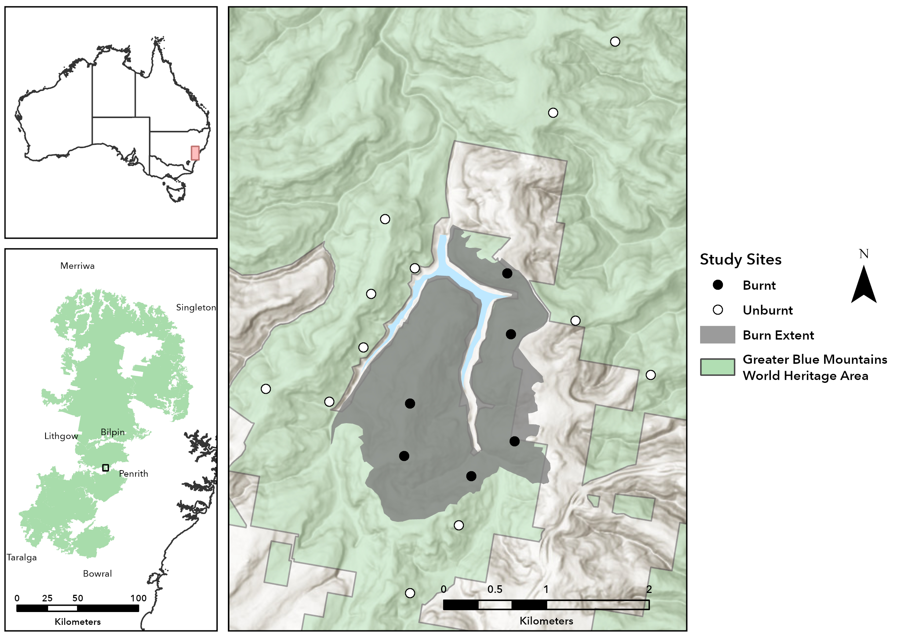

Resources
Literature
You can download pdf files of papers below.
You should have read the papers above before you chose this project. If you haven’t, try to read these papers before your Week 4 presentations at the latest. Many of the ideas discussed in these papers are fundamental to the project and will help you understand the study design, develop stronger hypotheses, and answer questions during presentations.
BACI (Before/After and Control/Impact) sampling is widely used in investigations of environmental impacts on mean abundance of a population. The principle is that an anthropogenic disturbance in the “impact” location will cause a different pattern of change from before to after it starts compared with natural change in the control location. This can be detectable efficiently as a statistical interaction in an analysis of variance of the data. Usually, samples are taken at replicated, random intervals of time before and after the putative impact starts; this ensures that chance temporal fluctuations in either location do not confound the detection of an impact. These designs are, however, insufficient because any location-specific temporal difference that occurs between the two locations will be interpreted as an impact even if it has nothing to do with the human disturbance. Alternatively, abundance in the single control location may change in the same direction, cancelling the effects of an impact. Here, asymmetrical designs are developed that compare the temporal change in a potentially impacted location with those in a randomly-selected set of control locations. An impact must cause a different temporal change in the disturbed location from what would be expected in similar locations. This can be detected for short-term (pulse) or long-term (press) impacts by different patterns of significance in the temporal interactions between time~ of sampling and locations. From these novel designs, tests are derived that demonstrate whether an unusual pattern of temporal change in abundance of organisms is specific to the supposedly impacted location and correlated with the onset of the disturbance. Examples are presented of how to use these designs to detect impacts at different spatial scales. Other aspects of their use are discussed.
Variation in avian diversity in space and time is commonly used as a metric to assess environmental changes. Conventionally, such data were collected by expert observers, but passively collected acoustic data is rapidly emerging as an alternative survey technique. However, efficiently extracting accurate species richness data from large audio datasets has proven challenging. Recent advances in deep artificial neural networks (DNNs) have transformed the field of machine learning, frequently outperforming traditional signal processing techniques in the domain of acoustic event detection and classification. We developed a DNN, called BirdNET, capable of identifying 984 North American and European bird species by sound. Our task-specific model architecture was derived from the family of residual networks (ResNets), consisted of 157 layers with more than 27 million parameters, and was trained using extensive data pre-processing, augmentation, and mixup. We tested the model against three independent datasets: (a) 22,960 single-species recordings; (b) 286 h of fully annotated soundscape data collected by an array of autonomous recording units in a design analogous to what researchers might use to measure avian diversity in a field setting; and (c) 33,670 h of soundscape data from a single high-quality omnidirectional microphone deployed near four eBird hotspots frequented by expert birders. We found that domain-specific data augmentation is key to build models that are robust against high ambient noise levels and can cope with overlapping vocalizations. Task-specific model designs and training regimes for audio event recognition perform on-par with very complex architectures used in other domains (e.g., object detection in images). We also found that high temporal resolution of input spectrograms (short FFT window length) improves the classification performance for bird sounds. In summary, BirdNET achieved a mean average precision of 0.791 for single-species recordings, a F0.5 score of 0.414 for annotated soundscapes, and an average correlation of 0.251 with hotspot observation across 121 species and 4 years of audio data. By enabling the efficient extraction of the vocalizations of many hundreds of bird species from potentially vast amounts of audio data, BirdNET and similar tools have the potential to add tremendous value to existing and future passively collected audio datasets and may transform the field of avian ecology and conservation.
Prescribed burning is widely used to mitigate the effects of severe fires across the landscape and to maintain biodiversity. Just like wildfires, the severity of prescribed burns can vary; this study was an opportunistic investigation. In one fortnight during autumn months of 2012, several prescribed burns were carried out in heathydry forests of central Victoria, Australia. We used measurements of canopy scorch, bark burn and ground cover burn to calculate a severity score for each site. The severity scores across sites ranged from low (2.5) to high (10). A before-after control-impact (BACI) design was utilised to model the potential impacts of fire and fire severity on birds. We used generalised linear mixed models (GLMM’s), and incorporated first- and second-year post-fire spring/summer observations from 2012 to 2014, against bird data from observations carried out in 2010. The total combined abundances of individual species showed that broadly, bird abundance rebounded to pre-burn levels by the second spring post-fire. There was little response detected in either species richness or turnover. The muted turnover result aligns to other studies that indicate a scarcity of early-successional-stage species in eucalyptus forests and woodlands that rapidly regenerate post-fire. Ten individual species were also examined, and only one species, the White-throated Treecreeper (Cormobates leucophaea), responded to both fire and its severity. The BACI design was informative in illustrating that while the forest birds were resilient to small-scale prescribed burns of any severity, abundances in general may have been in decline, a result aligning with the years of reduced rainfall in the region.
Prescribed burning is a commonly adopted fire-management strategy that attempts to protect human life and assets by removing accumulated, flammable biomass. Heterogeneous burning patterns are often favoured in an attempt to balance fuel-reduction and biodiversity goals under the ‘pyrodiversity begets biodiversity’ paradigm. Using comprehensive spatiotemporal monitoring data, we quantified the impacts of fire on bird assemblages in the peri-urban temperate woodlands of the Mount Lofty Ranges, South Australia, where the frequency of prescribed burning is increasing. After accounting for regional trends and site effects, sites burnt 20 years previously accommodated 15% fewer birds than unburnt sites, while sites burnt in the preceding year had 22% fewer birds. Fire also modified bird assemblages, favouring generalists and ground-feeding species. Of 60 species considered, 37% were both declining and negatively impacted by recent burning, while burning reinforced increasing trends in 30% of species, particularly large, common birds (e.g., magpies, ravens, wattlebirds). Simulations of avian alpha-, beta- and gamma-diversity under different fire-management scenarios predicted higher avian diversity for scenarios that retained unburnt woodlands relative to those that managed all sites. Relative to a no-fire scenario, for example, burning sites once every 10 years was simulated to reduce the abundance of woodland generalists by 7% and woodland specialists by 10%, while retaining some long-unburnt woodland ameliorated these effects. There is a trade-off between fuel-reduction burning and conservation goals; to maximise avian diversity and avert the replacement of woodland bird species with generalists, fire-management planning should preserve long-unburnt woodland habitat.
Passive acoustic monitoring (PAM) has emerged as a transformative tool for applied ecology, conservation and biodiversity monitoring, but its potential contribution to fundamental ecology is less often discussed, and fundamental PAM studies tend to be descriptive, rather than mechanistic. Here, we chart the most promising directions for ecologists wishing to use the suite of currently available acoustic methods to address long-standing fundamental questions in ecology and explore new avenues of research. In both terrestrial and aquatic habitats, PAM provides an opportunity to ask questions across multiple spatial scales and at fine temporal resolution, and to capture phenomena or species that are difficult to observe. In combination with traditional approaches to data collection, PAM could release ecologists from myriad limitations that have, at times, precluded mechanistic understanding. We discuss several case studies to demonstrate the potential contribution of PAM to biodiversity estimation, population trend analysis, assessing climate change impacts on phenology and distribution, and understanding disturbance and recovery dynamics. We also highlight what is on the horizon for PAM, in terms of near-future technological and methodological developments that have the potential to provide advances in coming years. Overall, we illustrate how ecologists can harness the power of PAM to address fundamental ecological questions in an era of ecology no longer characterised by data limitation.
Software
BirdNET
We will go through how to use BirdNET together, but here are a couple of guides - one by BirdNET and one made by us. Our guide can be found in the BirdNET guide page in the navigation bar.
Raven
Like BirdNET we will go through how to use Raven Annotate as well. The BirdNET guide above provides a step-by-step manual to use Raven after BirdNET, however, this requires Raven Pro (which requires payment). As Raven Pro is being retired at the end of the year, we will be trailing Raven Annotate (if this isn’t easy to use, we will try a different method). Our guide for Raven Annotate can be found in the Raven guide page in the navigation bar.
Scripts
The scripts folder contains R scripts that have been developed to automate many of the more repetitive data-processing tasks associated with acoustic datasets.
This script combines the output files generated by BirdNET into a single dataset. In addition to merging files, it extracts metadata and generates useful fields such as site, treatment, recording date, and recording time. For this script to work correctly, your files should follow the expected directory structure:
trip/
├── treatment/
│ ├── site/
│ │ ├── device/
│ │ │ ├── date/
│ │ │ │ └── file.csvThis script applies species-specific confidence thresholds to BirdNET detections. Rather than using a single confidence threshold for all species, this approach allows each species to be filtered according to the threshold that was determined during the BirdNET validation process. This generally produces more reliable datasets for downstream analyses.
P.S. Here’s a nicer looking map in case you want to use it.
